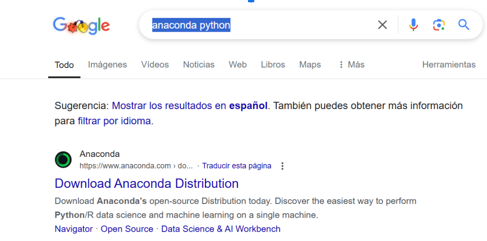

Introducción
Anaconda es una distribución de Python (también de R) que se usa para aplicaciones de ciencia de datos, aprendizaje automático e inteligencia artificial.
Instalación de Anaconda
- Buscar en navegador Anaconda Python.
- Descargar el programa según el almacenamiento de tu PC y tu sistema operativo (Anaconda o Miniconda).
- Descomprimir el archivo y darle todo por defecto. Una vez instalado, ejecutar cualquiera de los dos.
Uso de Label Studio
- Buscar en el navegador Label Studio.
- Ingresar y copiar los siguientes comandos.
- Abrir Anaconda Powershell Prompt y ejecutar los comandos.
- Configurar el proyecto y las etiquetas necesarias.
Objetivos del Proyecto
- Segmentar y calcular el área de la hoja de durazno en la imagen.
- Aislar el objeto del fondo para mejorar la precisión.
- Automatizar la detección de objetos similares.
Referencias
Rondón, I. (2022). ¿Qué es Anaconda?
HumanSignal. (2024). Descripción general de Label Studio.